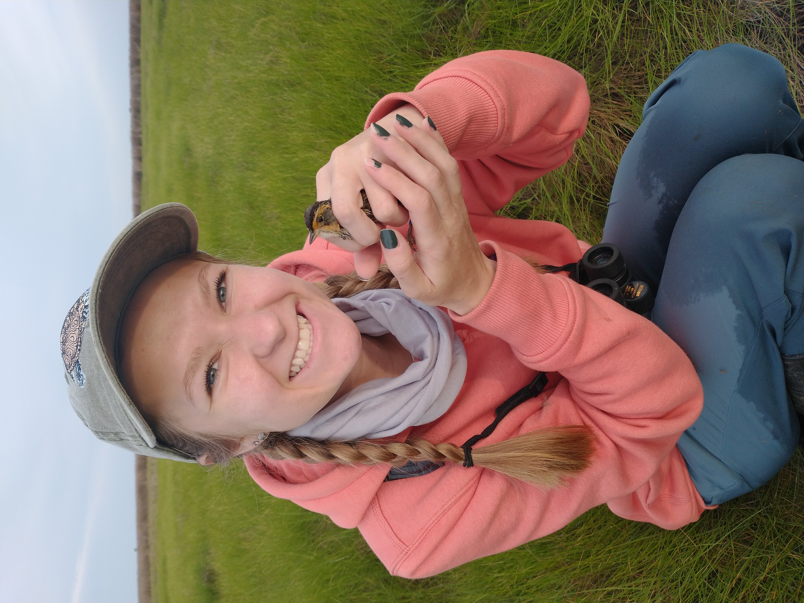
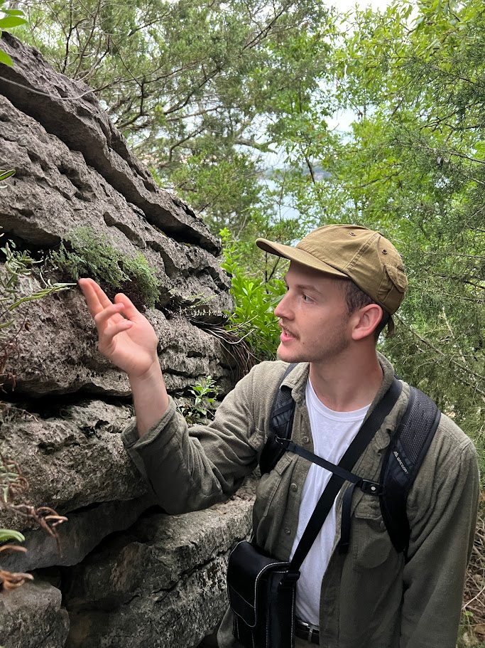

People
<<<<<<< HEAD Lab members listed alphabetically by last name. Last updated: Dec 1, 2025. ======= Lab members listed alphabetically by last name. Last updated: August 4, 2025. >>>>>>> d6e032b8f7a740dd6cf2487850bd8df54138d201
| Paul Akpejeluh | PhD Student | pa024@uark.edu | Paul’s research interests include rangeland ecology, geospatial mapping, GIS, and remote sensing. He is joining the Living Landscapes Lab to pursue a PhD in Invasion Ecology focusing on developing a national-scale early detection and rapid response tool to predict spread of invasive plants using Cocongrass as focal species. He completed his MS in Applied Ecology at the University of Nebraska-Lincoln and his research focused on monitoring abandoned bomas (livestock enclosures) using multi-scale remote sensing data at multiple temporal resolutions to better understand vegetation dynamics with their surrounding landscapes. He is originally from Nigeria, where he holds a BS in Environmental Science. In his free time, he enjoys landscape and nature photography, watching sports and travelling. | |
| Michael Ferrara | PhD Student | mcf017@uark.edu | Michael will be studying how birds use solar panel arrays with understories of native grasses and forbes compared to those with turf grass. He is passionate about species and ecosystem conservation. His primary research interests are in population dynamics, interspecies interactions and habitat use to protect species of concern. Michael received his B.S. from SUNY College of Environmental Science and Forestry and since then has been working with avian species across the eastern United States. He is originally from Long Island, New York and in his free time, he enjoys hiking, birding, photography, traveling, cooking, playing video games and watching sports. | |
| Lindsey LaBrie | PhD Student | llabrie@uark.edu | Lindsey is interested in invasive species ecology of riverine ecosystems, especially in the context of climate change. In the Living Landscapes Lab, she will be researching differences in invasive species management policies across the country, determining invasion potential for various aquatic nuisance species throughout the state of Arkansas, and estimating future invasion risks using climate change models and horizon mapping techniques. She completed her M.S. in Biology at the University of South Dakota in May 2023. She received a B.S. in Fisheries & Wildlife and a B.A. in German Language & Literature from the University of Nebraska-Lincoln in May 2020. Lindsey is originally from Hastings, Nebraska. When she’s not on the river or thinking about fish, you’ll find her drinking coffee, gardening, painting, cooking, rollerblading, camping, indoor rock climbing, or snuggling with her cat Jinx. | |
| Lauren Luther | Master’s Student | leluther@uark.edu | Lauren is joining the Living Landscapes lab as a Master’s student to study the impacts of pine savanna restoration in the Southeast. She is passionate about habitat restoration and looks forward to learning about and working with such an important and iconic ecosystem type. Lauren received a B.S. in Biology from the University of Arkansas and studied the effects of solar panels on the quality of data collected by autonomous recording units for her undergraduate honors thesis. Originally from central Arkansas, Lauren enjoys spending her free time hiking with her dog, canoeing, and calling the hogs! |

|
| Anne Puchalsky | Master’s Student | annep@uark.edu | Anne’s research will be focused on King Rail in southeastern Arkansas, furthering the understanding of the species breeding ecology in the state. Her research will work to gather data on dispersal rates and movement ecology of juvenile rails. She will also be investigating how water level management affects reproductive success of the King Rail. Originally from Pennsylvania, she received her B.S. from Penn State and has since worked with Saltmarsh Sparrows and Black-throated green warblers. Her interests include the conservation of at-risk and cryptic species often found in swamp and marsh habitats. In her free time she enjoys working out, birding, herping, wildlife photography and anything else outdoors. |  |
| Caleb Roberts | PI | cr065@uark.edu | Caleb is the leader of the Living Landscapes Lab. He works for the U.S. Geological Survey as the Unit Leader of the Arkansas Cooperative Fish & Wildlife Research Unit. Caleb’s research interests include ecological resilience, grasslands, landscape ecology, fire, birds, invasive species, plants, community ecology, agroecosystems, complexity theory, and rangelands. Caleb is from western Kentucky, and he enjoys writing, running, reading, cooking, gardening, board games, hiking, and hanging out with his wife, daughter, and cats. |

|
| Andrew Ruegsegger | PhD Student | ajruegse@uark.edu | Andrew is interested in plant community assembly in grassland and woodland communities. He is joining the Living Landscapes lab as a PhD student to investigate the abiotic and biotic factors that affect assembly in Ozark glade communities using phylogenetic and functional trait tools. He hopes insights from this research will inform conservation and management goals in restoration efforts. Originally from Norfork, AR, Andrew graduated from the University of Arkansas in 2024 with a B.S. in Anthropology. He serves on the board of the Arkansas Native Plant Society and enjoys spending his free time drumming in three Fayetteville-based rock bands. Otherwise, you can find him taking photos of plants, studying plant ID, or volunteering with the AR Master Naturalists or local outdoor education camps. |  |
| Gracie Whatley | Master’s Student | TBD | TBD |

|
| Evan Wilson | Postdoctoral Fellow | ew169@uark.edu | Evan is a research ecologist that studies how human activities directly and indirectly impact wildlife species’ population dynamics and space use. At the University of Arkansas, he will be developing an integrated population model to better understand the drivers of wild turkey (Meleagris gallopavo) population dynamics in Arkansas. He received his doctorate from the University of Wisconsin, where he studied the impacts of habitat and climate change on snowshoe hare populations and associated ecological communities. In his free time, he enjoys hiking, fishing, birding, watching baseball. |